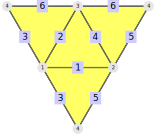

This chapter is concerned with different graphs associated to (twisted) polygonal complexes, as well as isomorphisms and automorphisms.
A twisted polygonal complex can be completely described by its chamber adjacencies, which can be encoded as an edge-coloured graph. A polygonal complex is completely determined by its incidence structure, which can be encoded as a vertex-coloured graph. Thus, the isomorphism problem between (twisted) polygonal complexes reduces to the graph isomorphism problem.
Most of the methods in this chapter need access to one of the graph packages in GAP (check the method descriptions to see whether a certain graph package is sufficient to execute the method). Currently supported are the packages Digraphs, GRAPE and NautyTracesInterface. A discussion of their individual merits is postponed to Section 15.1.
Sections 15.2 and 15.3 introduce the incidence graph and the chamber adjacency graph. Although isomorphism testing and automorphism computation relies on them, these sections are in general not necessary in practice.
Section 15.4 describes the edge graph and the face graph of a polygonal complex. They are used in practice like in 15.4-3.
Section 15.5 contains the isomorphism method IsIsomorphic (15.5-1).
Section 15.6 explains in detail how to use the automorphism group of (twisted) polygonal complexes. Section 15.7 explores the action of automorphisms on paths.
The SimplicialSurface-package supports three different graph packages: Digraphs, GRAPE and NautyTracesInterface.
They have different benefits and disadvantages and are therefore recommended for different uses:
NautyTracesInterface: This package is designed for the single purpose of enabling a fast interface to Nauty/Traces. In this measure it excels. On almost all other measures it does not compete.
Therefore it is recommended to have this package available to make isomorphism testing and automorphism computation fast. For other purposes it is not recommended.
GRAPE: This package is designed to work with graphs that have large automorphism groups. Unfortunately it is written in a way that is not fully compatible with modern GAP. Therefore it is often necessary to perform ShallowCopy on a graph before any methods can be applied to it.
Its main advantage is that it works out of the box.
Digraphs: This package has the goal of becoming the leading graph package in GAP. It is still developed further but there are sometimes problems with its installation.
If the installation is working though, it is recommended to use Digraphs instead of GRAPE.
To get information about a graph is for NautyTracesInterface and GRAPE not so nice as for Digraphs. The different ways to get the information are shown in section 15.2.
The incidence relation (which is central to our concept of polygonal complexes, compare chapter 2) can be interpreted as a coloured undirected graph, the incidence graph of the polygonal complex.
The vertices of this incidence graph consist of all vertices (colour 0), edges (colour 1) and faces (colour 2) of the polygonal complex. The edges of the incidence graph are given by pairs of vertices-edges and edges-faces that are incident to each other.
As an example, consider the polygonal surface from section 3.2:
Unfortunately the vertex labels of the graph in GAP have to be distinct, which is not guaranteed in general. Therefore we shift the labels of the edges by the maximal vertex label and the face labels by the sum of the maximal vertex and edge labels. In the example above the maximal vertex label is 11 and the maximal edge label is 13. It would be modified like this:
The incidence graph is given as a GAP-graph. Currently these packages are supported: Digraphs, GRAPE and NautyTracesInterface.
‣ IncidenceDigraphsGraph( complex ) | ( attribute ) |
‣ IncidenceGrapeGraph( complex ) | ( attribute ) |
‣ IncidenceNautyGraph( complex ) | ( attribute ) |
Returns: a graph as defined in the package Digraphs,GRAPE or NautyTracesInterface
Return the incidence graph (a coloured, undirected graph) of the given polygonal complex. The incidence graph is defined as follows:
The vertices are the vertices (colour 0), edges (colour 1) and faces (colour 2) of complex. The labels are shifted in the following way:
The vertex numbers are not modified
The edge numbers are shifted upwards by the maximal vertex number
The face numbers are shifted upwards by the sum of the maximal vertex number and the maximal edge number
The edges are vertex-edge-pairs or edge-face-pairs such that the elements of the pair are incident in complex.
The returned graph can be given in three different formats, corresponding to different graph packages: Digraphs, GRAPE and NautyTracesInterface.
Note that if IncidenceDigraphsGraph is used the output is a list, where the first entry is a digraph and the second a list of vertex colours, with the colours 1...4. There are isolated vertices of the digraph which correspond to labels of vertices, edges and faces that do not exists in the given polygonal complex. These are coloured with colour 4 and the other vertices are coloured as described above but increased by one.
Consider the polygonal complex at the begin of section 15.2:
gap> complex := PolygonalComplexByDownwardIncidence( > [ , , , , , [2,5], , [2,3], [3,5], [11,5], , [3,7], [7,11] ], > [[6,8,9], , , [9,10,12,13]]); polygonal surface (5 vertices, 6 edges, and 2 faces)
First of all look at the graph given by Digraphs:
gap> digraph := IncidenceDigraphsGraph(complex)[1];; gap> DigraphVertices(digraph); [ 1 .. 28 ] gap> DigraphEdges(digraph); [ [ 2, 17 ], [ 2, 19 ], [ 3, 19 ], [ 3, 20 ], [ 3, 23 ], [ 5, 17 ], [ 5, 20 ], [ 5, 21 ], [ 7, 23 ], [ 7, 24 ], [ 11, 21 ], [ 11, 24 ], [ 17, 2 ], [ 17, 5 ], [ 17, 25 ], [ 19, 2 ], [ 19, 3 ], [ 19, 25 ], [ 20, 3 ], [ 20, 5 ], [ 20, 25 ], [ 20, 28 ], [ 21, 5 ], [ 21, 11 ], [ 21, 28 ], [ 23, 3 ], [ 23, 7 ], [ 23, 28 ], [ 24, 7 ], [ 24, 11 ], [ 24, 28 ], [ 25, 17 ], [ 25, 19 ], [ 25, 20 ], [ 28, 20 ], [ 28, 21 ], [ 28, 23 ], [ 28, 24 ] ]
Consider how getting information from a graph given by GRAPE looks like:
gap> grape := IncidenceGrapeGraph(complex).graph;; gap> DirectedEdges(grape)=DigraphEdges(digraph); true
Finally, consider how getting information from a graph given by NautyTracesInterface looks like:
gap> nauty:=UnderlyingNautyGraph(IncidenceNautyGraph(complex));; gap> nautyEdges:=nauty!.edges; [ [ 1, 6 ], [ 3, 6 ], [ 1, 7 ], [ 2, 7 ], [ 2, 8 ], [ 3, 8 ], [ 3, 9 ], [ 5, 9 ], [ 2, 10 ], [ 4, 10 ], [ 4, 11 ], [ 5, 11 ], [ 6, 12 ], [ 7, 12 ], [ 8, 12 ], [ 8, 13 ], [ 9, 13 ], [ 10, 13 ], [ 11, 13 ] ] gap> nautyEdges=DigraphEdges(digraph); false
The edges of the nauty incidence graph are not equal to the edges of the digraph, since the edges from the nauty graph are undirected.
To describe a twisted polygonal complex (compare Section 2.2), it is sufficient to know its chambers and their adjacencies. These can be encoded as an edge-coloured graph:
The vertices are the set of chambers.
If two chambers are k-adjacent, there is an edge labelled k between these two chambers.
In this fashion, we obtain an undirected graph whose edges are coloured with the colours 0, 1, and 2.
Unfortunately, the GAP-packages GRAPE and Digraphs do not support edge-coloured graphs. Therefore, only the graphs from the package NautyTracesInterface are supported.
‣ ChamberAdjacencyGraph( complex ) | ( attribute ) |
Returns: a graph as defined in the package NautyTracesInterface
Return the chamber adjacency graph (an edge-coloured, undirected graph) of the given twisted polygonal complex. It is defined as follows:
The vertices are the chambers of complex.
If two chambers are k-adjacent in complex, there is an edge with colour k between the corresponding vertices of this graph.
Since GRAPE and Digraphs currently do not support edge-coloured graphs, the chamber adjacency graph can only be given as a graph from NautyTracesInterface.
Note that the vertices of graph from NautyTracesInterface have to be the integers from 1 to the number of chambers.
TODO example that also shows how we can get any information out of these graphs
For some purposes it is useful to work with other associated graphs of polygonal complexes. In this section the edge graph of a polygonal complex and the face graph of a polygonal surface is introduced. Both of them are implemented for all supported graph packages: Digraphs, GRAPE and NautyTracesInterface. These graphs are useful if it is not necessary to need all information of the complex. The edge graph only describes the incidence structure of vertices and edges. Instead, the face graph describes the incidence structure of edges and faces. Using method 15.4-3 it is possible to get all surfaces that have a common face graph.
The face graph and the edge graph of a polygonal complex are dual graphs of each other. The dual graph of a planar graph G is a graph that has a vertex for each face of G and an edge for each pair of faces that intersect in at least one edge. For example, consider the ocathedron. The following graph is the face graph of the octahedron: The edge graph of the octahedron, i.e. the dual of the face graph, is the following graph:
The face graph of the octahedron is equivalent to the edge graph of the cube and vice versa. That means the dual polyhedron of the cube is the octahedron. In section 15.4-1 and 15.4-2 is an example, where the edge graph respectively the face graph is self dual. That means that the edge graph and the face graph of a polygonal complex are equal.
‣ EdgeDigraphsGraph( complex ) | ( attribute ) |
‣ EdgeGrapeGraph( complex ) | ( attribute ) |
‣ EdgeNautyGraph( complex ) | ( attribute ) |
Returns: a graph as defined in the package Digraphs/GRAPE/NautyTracesInterface
Return the edge graph of the given polygonal complex. The vertices of the edge graph are the vertices of complex and for every edge in complex there is a corresponding edge in the edge graph.
The vertices of the resulting graph are always numbered from 1 to n, where n is the number of the vertices. That means if the vertex list of surface is not bounded, the vertices in the graph will have a different number than the vertices of surface. The same hold for the edges in Nauty. Since the edges in Digraphs are directed but the edge graph is undirected, each edge of the edge graph is represented by two directed edges in the Digraphs package.
For example, consider the edge graph of the tetrahedron:
gap> digraph:=EdgeDigraphsGraph(Tetrahedron()); <immutable digraph with 4 vertices, 12 edges> gap> DigraphEdges(digraph); [ [ 1, 2 ], [ 2, 1 ], [ 1, 3 ], [ 3, 1 ], [ 1, 4 ], [ 4, 1 ], [ 2, 3 ], [ 3, 2 ], [ 2, 4 ], [ 4, 2 ], [ 3, 4 ], [ 4, 3 ] ]
This is the edge graph of the tetrahedron with undirected edges:
‣ FaceDigraphsGraph( complex ) | ( attribute ) |
‣ FaceNautyGraph( complex ) | ( attribute ) |
Returns: a graph as defined in the package Digraphs/NautyTracesInterface
Return the face graph of a given polygonal complex. The vertices of the face graph are the faces of complex and for every edge in complex there is a corresponding edge in the face graph.
The returned graph can be given in two different formats, corresponding to different graph packages: Digraphs and NautyTracesInterface
The returned graph cannot be given as a grape graph because the GRAPE package does not allow multiple edges.
The vertices of the resulting graph are always numbered from 1 to n, where n is the number of the faces. That means if the face list of complex is not bounded, the vertices in the graph will have a different number than the faces of complex. The same hold for the edges in Nauty. Since the edges in Digraphs are directed but the face graph is undirected, each edge of the face graph is represented by two directed edges in the Digraphs package.
For example, consider the face graph of the tetrahedron:
gap> digraph:=FaceDigraphsGraph(Tetrahedron()); <immutable digraph with 4 vertices, 12 edges> gap> digraphEdges:=DigraphEdges(digraph); [ [ 1, 2 ], [ 2, 1 ], [ 1, 4 ], [ 4, 1 ], [ 2, 4 ], [ 4, 2 ], [ 1, 3 ], [ 3, 1 ], [ 2, 3 ], [ 3, 2 ], [ 3, 4 ], [ 4, 3 ] ]
This is the face graph of the tetrahedron with undirected edges:
‣ AllSimplicialSurfacesOfDigraph( digraph[, vertexfaithful] ) | ( operation ) |
Returns: a list
Return all (vertex-faithful) simplicial surfaces, that have digraph as face graph. If digraph is not a face graph of a (vertex-faithful) simplicial surface, the empty list is returned. The parameter vertexfaithful indicates whether only vertex-faithful simplicial surfaces are searched. The parameter vertexfaithful is by default false. digraph must be a cubic, connected, symmetric and simple digraph. The vertices of a simplicial surface can be identified with certain cycles in the face graph. This method searches possible combinations of cycles, with the cycles corresponding to the vertices of a simplicial surface.
For example, consider the complete graph on four nodes:
gap> digraph:=CompleteDigraph(4);; gap> tet1 := AllSimplicialSurfacesOfDigraph(digraph,true); [ simplicial surface (4 vertices, 6 edges, and 4 faces) ] gap> IsIsomorphic(tet1[1],Tetrahedron()); true
So the only vertex-faithful simplicial surface of the digraph is the tetrahedron. But there is another simplicial surface, which is not vertex-faithful:
gap> list := AllSimplicialSurfacesOfDigraph(digraph,false); [ simplicial surface (4 vertices, 6 edges, and 4 faces), simplicial surface (3 vertices, 6 edges, and 4 faces)] gap> tet2 := Filtered(list,IsVertexFaithful); [ simplicial surface (4 vertices, 6 edges, and 4 faces) ] gap> IsIsomorphic(tet2[1],Tetrahedron()); true
Since it takes a long time to compute all cycles, you should only call the method for digraphs with twelve or less nodes for vertexfaithful false. For vertexfaithful true, the method needs to consider only chordless and non-separating cycles. This makes the method fast for digraphs up to 28 nodes. In general, it is much faster to only look for vertex-faithful simplicial surfaces.
The twisted polygonal complexes from Chapter 2 can be described by their chamber adjacency structure. The chamber adjacency can be modelled as an undirected, edge-coloured graph (compare Section 15.3). Thus, the isomorphism problem for twisted polygonal complexes reduces to the graph isomorphism problem.
The graph isomorphism problem is solved by Nauty/Bliss, using the GAP-package NautyTracesInterface.
‣ IsIsomorphic( complex1, complex2 ) | ( operation ) |
Returns: true or false
Return whether the given twisted polygonal complexes are isomorphic, i.e. whether their chamber adjacency graphs (compare 15.3) are isomorphic. If both twisted polygonal complexes are polygonal complexes, this can equivalently be described as isomorphism between their incidence graphs (compare 15.2).
gap> IsIsomorphic( Cube(), Octahedron() ); false
‣ IsomorphismRepresentatives( complexList ) | ( operation ) |
Returns: a list of twisted polygonal complexes
The method IsomorphismRepresentatives takes a list of twisted polygonal complexes and returns a reduced list in which no two entries are isomorphic.
gap> complexList := [ Cube(), JanusHead(), Cube(), Cube() ];; gap> Size(complexList); 4 gap> repList := IsomorphismRepresentatives(complexList);; gap> Size(repList); 2 gap> Cube() in repList; true gap> JanusHead() in repList; true
In many cases it is enough to know whether two twisted polygonal complexes are isomorphic. In some cases it is useful to know the concrete isomorphism between them. TODO can something be done about this? Currently the returned isomorphism does not match the labels (and group actions are hard to define);
‣ CanonicalRepresentativeOfPolygonalSurface( surface ) | ( operation ) |
Returns: A list containing the canonical form of the surface and a polygonal morphism from the canonical surface to the original surface
Find the canonical representative of a polygonal surface, i.e. an isomorphic surface with the following properties:
The vertices are numbered consecutively from 1 to the number of vertices (and similarly for edges and faces)
For any isomorphic surface, the same unique representative is returned in each case.
Also provides a polygonal morphism (compare chapter 7) from the canonical surface to the original surface. The following example illustrates the use of the CanonicalRepresentativeOfPolygonalSurface command. We define the cube, but with a labelling of larger than necessary integers. CanonicalRepresentativeOfPolygonalSurface is then used to return both the canonical representative of the cube and the maps between the cube and its canonical representative. The faces, edges and vertices are displayed and are clearly now lex least in their ordering. Some checks reveal that the cube is not identical to its canonical representative, it is however isomorphic, and mapping the canonical representative under its preimage map returns the cube again.
gap> faces := [ 20, 21, 22, 23, 24, 25 ];; gap> edges := [ 4, 5, 6, 7, 8, 9, 10, 11, 12, 13, 14, 15 ];; gap> vertices := [ 12, 13, 14, 15, 16, 17, 18, 19 ];; gap> edgesOfFaces := [ ,,,,,,,,,,,,,,,,,,, [ 4, 5, 6, 7 ], [ 4, 8, 11, 15 ], > [ 5, 8, 9, 12 ], [ 7, 10, 11, 14 ], [ 6, 9, 10, 13 ], > [ 12, 13, 14, 15 ] ];; gap> verticesOfEdges := [ ,,, [ 12, 13 ], [ 13, 14 ], [ 14, 15 ], [ 12, 15 ], > [ 13, 17 ], [ 14, 18 ], [ 15, 19 ], [ 12, 16 ], [ 17, 18 ], [ 18, 19 ], > [ 16, 19 ], [ 16, 17 ] ];; gap> cube := PolygonalSurfaceByDownwardIncidence(vertices, edges, faces, > verticesOfEdges, edgesOfFaces);; gap> canonicalCube:=CanonicalRepresentativeOfPolygonalSurface(cube);; gap> canon:=canonicalCube[1];; gap> Faces(canon); [ 1 .. 6 ] gap> Edges(canon); [ 1, 2, 3, 4, 5, 6, 7, 8, 9, 10, 11, 12 ] gap> Vertices(canon); [ 1, 2, 3, 4, 5, 6, 7, 8 ] gap> EdgesOfFaces(canon); [ [ 1, 2, 3, 4 ], [ 5, 6, 7, 8 ], [ 1, 5, 9, 10 ], [ 3, 7, 9, 11 ], [ 4, 8, 10, 12 ], [ 2, 6, 11, 12 ] ] gap> VerticesOfEdges(canon); [ [ 1, 2 ], [ 3, 4 ], [ 1, 3 ], [ 2, 4 ], [ 5, 6 ], [ 7, 8 ], [ 5, 7 ], [ 6, 8 ], [ 1, 5 ], [ 2, 6 ], [ 3, 7 ], [ 4, 8 ] ] gap> canon=cube; false gap> IsIsomorphic(cube, canon); true gap> original := RangeSurface(canonicalCube[2]);; gap> original=cube; true
This section explains how to compute automorphism groups of twisted polygonal complexes. Since this computation relies on the chamber adjacency graph (compare Section 15.3), the package NautyTracesInterface has to be available.
Working with the automorphism group of a polygonal complex is complicated since any automorphism acts on vertices, edges, and faces simultaneously. In general it is not possible to define an automorphism by defining it just on the vertices (or edges, or faces). Whenever this is possible, the situation becomes much easier. This happens for example with the tetrahedron:

gap> tetra := Tetrahedron();; gap> IsAutomorphismDefinedByFaces(tetra); true gap> AutomorphismGroupOnFaces(tetra); Group([ (1,2), (2,4), (3,4) ])
For the janus-head this is not possible.
gap> janus := JanusHead();; gap> IsAutomorphismDefinedByVertices(janus); false gap> IsAutomorphismDefinedByEdges(janus); false gap> IsAutomorphismDefinedByFaces(janus); false
Therefore, general automorphisms are not given by their action on vertices, edges, or faces. However, each automorphism is determined uniquely by its action on the chambers of a twisted polygonal complex. Any polygonal complex can be interpreted as a twisted polygonal complex, as shown in Section 5.4.
gap> AutomorphismGroup(tetra); Group([ (1,2)(3,5)(4,6)(7,8)(9,11)(10,12)(13,19)(14,20)(15,21)(16,22)(17,23)(18,24), (1,3)(2,4)(5,6)(7,13)(8,14)(9,15)(10,16)(11,18)(12,17)(19,20)(21,24)(22,23), (1,7)(2,8)(3,9)(4,10)(5,11)(6,12)(13,15)(14,16)(17,18)(19,21)(20,22)(23,24) ]) gap> Size(last); 24 gap> AutomorphismGroup(janus); Group([ (1,2)(3,4)(5,6)(7,8)(9,10)(11,12), (1,3)(2,4)(5,9)(6,10)(7,11)(8,12), (1,5)(2,6)(3,7)(4,8)(9,11)(10,12) ]) gap> Size( last ); 12
Unfortunately, this makes it more complicated to understand the automorphisms at a glance. To see the individual action on vertices, edges and faces, the method DisplayAsAutomorphism (15.6-2) can be used.
For example, the first generator of the tetrahedron automorphism group can be displayed like this:
gap> DisplayAsAutomorphism( tetra, > (1,2)(3,5)(4,6)(7,8)(9,11)(10,12)(13,19)(14,20)(15,21)(16,22)(17,23)(18,24)); [ (3,4), (2,3)(4,5), (1,2) ]
The first component describes the action on the vertices, the second component shows the action on the edges and the final component represents the action on the faces.
Often, it can be avoided to calculate with such a big group representation since the automorphisms are usually determined by vertices, edges, or faces. For example, consider the open bag. 
gap> openBag := SimplicialSurfaceByDownwardIncidence( > [[1,2],[1,3],[2,3],[2,3]], [[1,2,4],[1,2,3]]);; gap> IsAutomorphismDefinedByVertices(openBag); false gap> IsAutomorphismDefinedByEdges(openBag); true gap> IsAutomorphismDefinedByFaces(openBag); false
Therefore, the automorphism group is best represented by its action on the edges.
gap> AutomorphismGroupOnEdges(openBag); Group([ (3,4), (1,2) ])
‣ AutomorphismGroup( complex ) | ( attribute ) |
Returns: a permutation group
Compute the automorphism group of the twisted polygonal complex complex as a permutation group on the chambers of complex. For an introduction into the usage and conventions of automorphism groups in the SimplicialSurface-package, compare the start of section 15.6.
For the tetrahedron this gives the following result:
gap> tetra := Tetrahedron();; gap> Vertices(tetra); [ 1, 2, 3, 4 ] gap> Edges(tetra); [ 1, 2, 3, 4, 5, 6 ] gap> Faces(tetra); [ 1 .. 4 ] gap> Chambers(tetra); [ 1 .. 24 ] gap> aut := AutomorphismGroup(tetra); Group([ (1,2)(3,5)(4,6)(7,8)(9,11)(10,12)(13,19)(14,20)(15,21)(16,22)(17,23)(18,24), (1,3)(2,4)(5,6)(7,13)(8,14)(9,15)(10,16)(11,18)(12,17)(19,20)(21,24)(22,23), (1,7)(2,8)(3,9)(4,10)(5,11)(6,12)(13,15)(14,16)(17,18)(19,21)(20,22)(23,24) ])
To see the action on vertices, edges, and faces simultaneously, use the method DisplayAsAutomorphism (15.6-2).
gap> DisplayAsAutomorphism( tetra, aut.1 ); [ (3,4), (2,3)(4,5), (1,2) ] gap> DisplayAsAutomorphism( tetra, aut.2 ); [ (2,3), (1,2)(5,6), (2,4) ] gap> DisplayAsAutomorphism( tetra, aut.3 ); [ (1,2), (2,4)(3,5), (3,4) ]
To compute the action on vertices, edges or faces individually, use the methods AutomorphismGroupOnVertices (15.6-3), AutomorphismGroupOnEdges (15.6-4) or AutomorphismGroupOnFaces (15.6-5).
gap> AutomorphismGroupOnVertices(tetra); Group([ (3,4), (2,3), (1,2) ]) gap> AutomorphismGroupOnEdges(tetra); Group([ (2,3)(4,5), (1,2)(5,6), (2,4)(3,5) ]) gap> AutomorphismGroupOnFaces(tetra); Group([ (1,2), (2,4), (3,4) ])
For example, the automorphism group of an icosahedron (14.3-6) is the direct product of a cyclic group of order 2 and an alternating group of order 60.
gap> autIco := AutomorphismGroup( Icosahedron() );; gap> Size(autIco); 120 gap> StructureDescription(autIco); "C2 x A5"
‣ DisplayAsAutomorphism( complex, perm ) | ( operation ) |
Returns: A list of three permutations
Display an automorphism of the given complex by its individual action on vertices, edges, and faces.
An explanation for the necessity of this method is given in section 15.6.
We illustrate this on the example of a tetrahedron.
gap> tetra := Tetrahedron();; gap> aut := AutomorphismGroup( tetra ); Group([ (1,2)(3,5)(4,6)(7,8)(9,11)(10,12)(13,19)(14,20)(15,21)(16,22)(17,23)(18,24), (1,3)(2,4)(5,6)(7,13)(8,14)(9,15)(10,16)(11,18)(12,17)(19,20)(21,24)(22,23), (1,7)(2,8)(3,9)(4,10)(5,11)(6,12)(13,15)(14,16)(17,18)(19,21)(20,22)(23,24) ]) gap> DisplayAsAutomorphism( tetra, aut.1 ); [ (3,4), (2,3)(4,5), (1,2) ] gap> DisplayAsAutomorphism( tetra, aut.2 ); [ (2,3), (1,2)(5,6), (2,4) ] gap> DisplayAsAutomorphism( tetra, aut.3 ); [ (1,2), (2,4)(3,5), (3,4) ] gap> DisplayAsAutomorphism( tetra, aut.1 ); [ (3,4), (2,3)(4,5), (1,2) ]
‣ AutomorphismGroupOnVertices( complex ) | ( attribute ) |
‣ IsAutomorphismDefinedByVertices( complex ) | ( property ) |
Returns: a permutation group
The method AutomorphismGroupOnVertices returns the action of the automorphism group of complex on its vertices. If IsAutomorphismDefinedByVertices(complex) is true, this is isomorphic to the full automorphism group.
For the cube (14.3-3) we get: 
gap> cube := Cube();; gap> IsAutomorphismDefinedByVertices(cube); true gap> AutomorphismGroupOnVertices(cube); Group([ (3,6)(4,5), (2,4)(6,8), (1,2)(3,4)(5,6)(7,8) ])
‣ AutomorphismGroupOnEdges( complex ) | ( attribute ) |
‣ IsAutomorphismDefinedByEdges( complex ) | ( property ) |
Returns: a permutation group
The method AutomorphismGroupOnEdges returns the action of the automorphism group of complex on its edges. If IsAutomorphismDefinedByEdges(complex) is true, this is isomorphic to the full automorphism group.
For the cube (14.3-3) we get:
gap> cube := Cube();; gap> IsAutomorphismDefinedByEdges(cube); true gap> AutomorphismGroupOnEdges(cube); Group([ (2,5)(3,12)(4,8)(6,9)(7,11), (1,4)(2,3)(5,7)(9,10)(11,12), (2,4)(5,8)(6,7)(9,11) ])
‣ AutomorphismGroupOnFaces( complex ) | ( attribute ) |
‣ IsAutomorphismDefinedByFaces( complex ) | ( property ) |
Returns: a permutation group
The method AutomorphismGroupOnFaces returns the action of the automorphism group of complex on its faces. If IsAutomorphismDefinedByFaces(complex) is true, this is isomorphic to the full automorphism group.
For the cube (14.3-3) we get:
gap> cube := Cube();; gap> IsAutomorphismDefinedByFaces(cube); true gap> AutomorphismGroupOnFaces(cube); Group([ (1,2)(5,6), (2,4)(3,5), (3,4) ])
In section 15.6 the action of the automorphism group on vertices, edges, and faces was defined. Since these actions are given as permutations, they can be efficiently computed in GAP. Nevertheless, it is sometimes convenient (if slower) to act on some composite objects (like VertexEdgePaths) directly.
‣ OnVertexEdgePaths( vePath, aut ) | ( operation ) |
Returns: a vertex-edge-path
Apply the automorphism aut to the vertex-edge-path vePath (for their definition consult section 8.1). Currently this is only implemented if vePath is defined on a polygonal complex.
The automorphism should be given in the form that is returned by AutomorphismGroup (15.6-1). If the given automorphism is not well-defined for the given vePath (as checked by DisplayAsAutomorphism, 15.6-2), fail is returned.
As an example, we consider the octahedron.
gap> oct := Octahedron();;

We compute all duplicate-free vertex-edge-paths of length 2.
gap> paths := []; [] gap> for v in Vertices(oct) do > for edgePair in Arrangements( EdgesOfVertex(oct,v), 2 ) do > Add( paths, VertexEdgePathByEdges(oct, edgePair) ); > od; > od; gap> Length(paths); 72
The automorphism group has exactly two orbits on this set of paths (either the two edges belong to one triangle, or they don't).
gap> autOct := AutomorphismGroup(oct);; gap> pathOrbits := Orbits(autOct, paths, OnVertexEdgePaths);; gap> Length(pathOrbits); 2 gap> pathOrbits[1][1]; | v2, E1, v1, E2, v3 | gap> pathOrbits[2][1]; | v2, E1, v1, E3, v4 | gap> List( pathOrbits, Length ); [ 48, 24 ]
‣ OnEdgeFacePaths( efPath, aut ) | ( operation ) |
Returns: an edge-face-path
Apply the automorphism aut to the edge-face-path efPath (for their definition consult section 8.3). Currently this is only implemented if efPath is defined on a polygonal complex.
The automorphism should be given in the form that is returned by AutomorphismGroup (15.6-1). If the given automorphism is not well-defined for the given vePath (as checked by DisplayAsAutomorphism, 15.6-2), fail is returned.
As an example, we consider the octahedron.
gap> oct := Octahedron();;
We compute all duplicate-free edge-face-paths of length 2.
gap> paths := []; [] gap> for f in Faces(oct) do > for pair in Arrangements( EdgesOfFace(oct, f), 2 ) do > sndFace := NeighbourFaceByEdge(oct, f, pair[2]); > otherEdges := Difference( EdgesOfFace(oct, sndFace), [pair[2]] ); > for finalEdge in otherEdges do > Add(paths, > EdgeFacePath(oct, [pair[1],f,pair[2],sndFace, finalEdge])); > od; > od; > od; gap> Length(paths); 96
The automorphism group has exactly two orbits on this set of paths.
gap> autOct := AutomorphismGroup(oct);; gap> pathOrbits := Orbits(autOct, paths, OnEdgeFacePaths);; gap> Length(pathOrbits); 2 gap> pathOrbits[1][1]; | e1, F1, e2, F7, e3 | gap> pathOrbits[2][1]; | e1, F1, e2, F7, e8 | gap> List( pathOrbits, Length ); [ 48, 48 ]
generated by GAPDoc2HTML